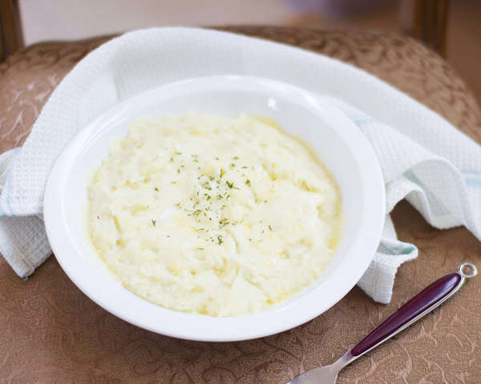

Potato Cream Gratin

for 2 people
Tool
Pot, Microwave(or oven)
time
15m
Kcal
224.6kcal
Ingredients
3 potato
6 tablespoons milk
1 handful of mozzarella cheese
1 tablespoon of butter [Optional]
1 tablespoon Parmesan cheese powder
1/3 tablespoon Minced garlic
A bit of Parsley powder
1.5 tablespoons of Salt
A bit of pepper
Recipe
Thoroughly wash the potatoes and boil in a pot of water with 1/2T salt.
Boil it with the skin on for less nutrient-loss. If you don't have time, you can peel the potatoes and cut it into small pieces.
Stick with a wooden chopstick to check if done. If done, remove the skin and mash it with butter, Parmesan cheese, minced garlic and some salt and pepper.
Tip! Use a fork to mash the potatoes.
Add 6T of milk to make the mash smoother.
Place it in a microwave-proof dish and top it with mozzarella cheese and microwave (700w) for 3 minutes until the cheese melts.
TIP! You can also bake for 10-15 minutes at 200 degrees.
